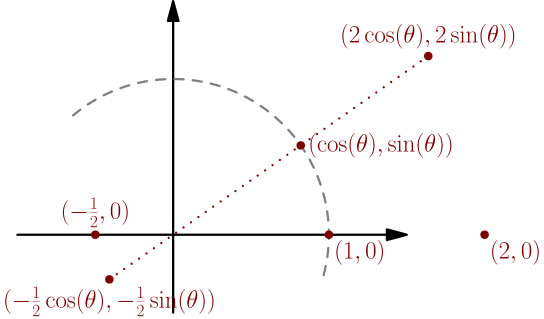

Introduction to linear algebra (rotating a vector)¶
To introduce linear algebra, we start by solving a problem: how to rotate a point by a given angle. This is useful in programming games, for example.
On this page, we assume that the center of rotation is $(0,0)$. It simplifies rotating, and if your rotation center is not $(0,0)$, it isn't hard to temporarily move the points so that the center of rotation becomes $(0,0)$. Let me know if you need more details about how to do this.
2D rotations can also be done with complex numbers, but that's not the point. Doing it with linear algebra is a good way to learn linear algebra basics.
90 degrees counter-clockwise¶
Let's rotate the point $(2,1)$ counter-clockwise by 90 degrees.

To find the rotated point, consider the triangle below it, and rotate that.
The $y$ coordinate of the rotated point is $2$, because that's the length of the longer side of the triangle. The $x$ coordinate is $-1$, because the shorter side has length $1$, but it is now on the other side of the $y$ axis. This works simialrly with any other point, even if the coordinates are negative or zero.
The point $(x,y)$ rotated counter-clockwise by 90 degrees around $(0,0)$ is $(-y, x)$.
To check whether this makes sense, we can view the points as arrows starting from $(0,0)$, so that $(x,y)$ corresponds with $x\I+y\J$. In linear algebra, it is very common to not distinguish between points and arrows. A vector can be interpreted as a point or as an arrow, whichever is more useful.
Now we can check whether we did this correctly:
- The dot product between the vectors is $$ (x,y) \cdot (-y,x) = x(-y) + yx = 0, $$ so they are perpendicular.
- The length of $(-y,x)$ is $$ |(-y,x)| = \sqrt{(-y)^2+x^2}, $$ which is simplifies to $\sqrt{x^2+y^2}$, so it has the length as $(x,y)$. This makes sense, because the length of the vector is the distance between origin and the corresponding point, and that shouldn't change when rotating.
Arbitrary angle¶
Now we can rotate by 90 degrees, but how to rotate by any other angle? To do this with linear algebra, we start by rotating simple points, and then generalize it to work with any point.
Let's start by rotating $(1,0)$ by any angle $\theta$.
The rotated point is on the unit circle at angle $\theta$, so it is $\red{(\cos(\theta),\sin(\theta))}$.
To rotate any point on the $x$ axis, such as $(2,0)$ or $(-\frac{1}{2}, 0)$, we can multiply $\red{(\cos(\theta),\sin(\theta))}$ by a number to stretch it.

To rotate $(0,1)$, we can take $\red{(\cos(\theta),\sin(\theta))}$, and rotate it by 90 degrees more. Because rotating $(x,y)$ by 90 degrees generally gives $(-y,x)$ (see above), we get $\blue{(-\sin(\theta),\cos(\theta))}$.
We can now similarly multiply $\blue{(-\sin(\theta),\cos(\theta))}$ by a number to rotate points on the $y$ axis. The minuses can cancel: when multiplying by $-\frac{1}{2}$, we get $(\frac{1}{2}\sin(\theta), -\frac{1}{2}\cos(\theta))$, with a positive $x$ coordinate.
To rotate any point $(x,y)$, we first write it as $(x,0) + (0,y)$, thinking of $(x,0)$ and $(0,y)$ as arrows, not as points. We can then rotate the arrows separately.

Any point $(x,0)$ on the $x$ axis can be rotated by first rotating $(1,0)$ and multiplying the result by $x$.
Any point $(0,y)$ on the $y$ axis can be rotated by first rotating $(0,1)$ and multiplying the result by $y$.
Any point $(x,y)$ can be rotated by splitting it into $(x,0)+(0,y)$ and rotating the two parts separately.
So for example, to rotate $(2,\frac{1}{2})$, we would calculate $$ \begin{align} \rotate\left(2,\frac{1}{2}\right) &= \rotate(2,0)+\rotate\left(0,\frac{1}{2}\right) \\ &= 2\red{\rotate(1,0)}+\frac{1}{2}\blue{\rotate(0,1)} \\ &= 2\red{(\cos(\theta),\sin(\theta))}+\frac{1}{2}\blue{(-\sin(\theta),\cos(\theta))} \\ &= \left( 2\cos(\theta)-\frac{1}{2}\sin(\theta), 2\sin(\theta)+\frac{1}{2}\cos(\theta) \right). \end{align} $$
Definitions¶
Note how the whole rotation is fully determined by how it rotates $(1,0)$ and $(0,1)$, because we can write any other vector as a combination of $(1,0)$ and $(0,1)$. Combinations like this are called linear combinations of $(1,0)$ and $(0,1)$. It means that the vectors were multiplied by some numbers and then added.
A linear combination is a vector you get by multiplying each of finitely many vectors with a number, and adding the resulting vectors. The numbers are called coefficients. In other words, a linear combination of vectors $\vec{v_1},\dots,\vec{v_n}$ with coefficients $a_1,\dots,a_n$ is $$ a_1\vec{v_1}+a_2\vec{v_2}+\dots+a_n\vec{v_n}. $$
To determine the whole rotation from rotated $(1,0)$ and rotated $(0,1)$, we first wrote the vector as a linear combination of $(1,0)$ and $(0,1)$, and then used these important properties of the rotation:
- Moving numbers to front: $\rotate(2(1,0)) = 2\rotate(1,0)$. This allowed us to rotate any point on the $x$ axis once we could rotate $(1,0)$.
- Rotating each part of a sum separately: $\rotate\left((2,0)+\left(0,\frac{1}{2}\right)\right) = \rotate(2,0)+\rotate\left(0,\frac{1}{2}\right)$. This allowed us to rotate any point after rewriting it as consisting of horizontal and vertical parts.
A linear function, also known as a linear transform, is any function that satisfies the last two properties.
A function $f$ taking vectors as arguments and outputting vectors is linear, if $f(a\vec{v})=af(\vec{v})$ for all numbers $a$ and vectors $\vec{v}$, and $f(\vec v+\vec w)=f(\vec v)+f(\vec w)$ for all vectors $\vec v$ and $\vec w$.
Now we can rewrite our rotation result in a more general way. It works in the same way with any linear function $f$, not just rotations.
Let $f$ be a linear function taking 2D vectors as inputs. If we know $\red{f(1,0)}$ and $\blue{f(0,1)}$, then we can calculate $f(x,y)$ for any $x$ and $y$ using linearity: $$ f(x,y) = x\red{f(1,0)} + y\blue{f(0,1)} $$
This is a very important idea in linear algebra!
This works similarly in 3D: if $f$ is linear and we know $\red{f(1,0,0)}$, $\blue{f(0,1,0)}$ and $\green{f(0,0,1)}$, then $$ f(x,y,z) = x\red{f(1,0,0)} + y\blue{f(0,1,0)} + z\green{f(0,0,1)}. $$ Or in 4D: $$ f(x,y,z,w) = x\red{f(1,0,0,0)} + y\blue{f(0,1,0,0)} + z\green{f(0,0,1,0)} + w\magenta{f(0,0,0,1)} $$ All this works with $n$-dimensional vectors too, for any $n$. We can have $n > 3$, and it's useful in many applications of linear algebra even though we can't visualize it nicely. For example, in statistics, $n$ can easily be 100 or 1000, depending on how much data has been collected. That's why the concept of a vector is often defined like this:
An $n$-dimensional vector $\vec{v}$ is a sequence of $n$ numbers: $$ \vec{v} = (a_1,a_2,\dots,a_n). $$
We will use mostly 2D and 3D vectors in examples, because they can be visualized as arrows or as points, whichever is more convenient.